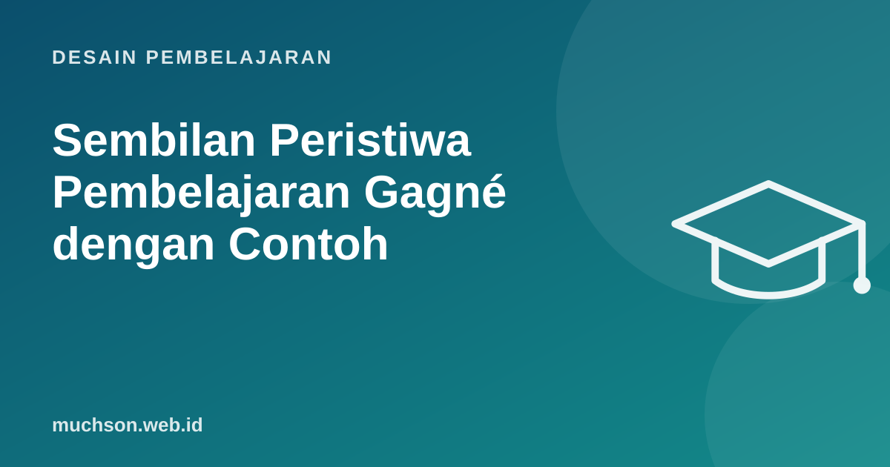

Beranda › Artikel › Desain Pembelajaran
Desain PembelajaranSembilan Peristiwa Pembelajaran Gagné dengan Contoh
Robert Gagné memperkenalkan sembilan peristiwa pembelajaran dalam The Conditions of Learning (1965). Model ini bukan resep kaku, melainkan daftar periksa: apakah sesi saya sudah menarik perhatian, mengaktifkan pengetahuan lama, memberi latihan, dan umpan balik? Setelah bertahun-tahun mengajar, saya masih memakainya untuk memeriksa rencana sesi.

Sembilan peristiwa
Contoh: sesi 90 menit "perulangan di Python"
| Peristiwa | Yang dilakukan | Menit |
|---|---|---|
| 1. Perhatian | Tampilkan kode 100 baris print berulang. "Bagaimana kalau 10.000 kali?" | 5 |
| 2. Tujuan | "Di akhir sesi, kalian bisa menulis for loop untuk menjumlahkan dan memfilter data." | 2 |
| 3. Pengetahuan lama | Kuis singkat list dan variabel | 8 |
| 4. Materi | Demo for dan range, tiga contoh pendek | 15 |
| 5. Bimbingan | Worked example: menjumlah nilai, langkah demi langkah | 10 |
| 6. Kinerja | Latihan berpasangan, 4 soal bertingkat | 25 |
| 7. Umpan balik | Tes otomatis + keliling memberi petunjuk | (selama latihan) |
| 8. Penilaian | Tiket keluar: 1 soal individu | 10 |
| 9. Transfer | Soal rumah: data nilai kelas sendiri; preview materi while | 5 |
Contoh: pelatihan korporat "menangani keluhan"
Cara memakainya dengan luwes
- Tidak harus berurutan kaku. Peristiwa 4-7 sering diulang beberapa kali dalam satu sesi untuk potongan materi berbeda.
- Tidak semuanya oleh pengajar. Peserta bisa saling memberi umpan balik, atau alat otomatis memberi umpan balik kode.
- Di e-learning, peristiwa 6 dan 7 sering terlewat. Pastikan ada interaksi yang menuntut peserta melakukan sesuatu, bukan hanya mengklik "lanjut".
Tanya jawab
Apakah model Gagné masih relevan?
Ya, sebagai kerangka periksa. Banyak temuan penelitian modern, seperti pentingnya latihan mengingat dan umpan balik, sejalan dengan peristiwa-peristiwanya.
Apakah harus sembilan semuanya dalam satu sesi?
Tidak selalu. Sesi singkat mungkin fokus pada beberapa peristiwa, dan sisanya terjadi di sesi berikutnya atau tugas mandiri.
Bagaimana menerapkannya di video pembelajaran?
Buka dengan masalah, sebut tujuan, beri contoh, lalu sisipkan pertanyaan atau latihan di tengah atau setelah video.
Sumber dan bacaan lanjut
- Northern Illinois University CITL: Gagné's Nine Events of Instruction
- University of Florida CITT: Gagné's 9 Events of Instruction